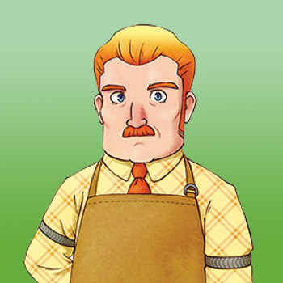

Dudley



Dudley es el gerente de la posada local y se ocupa del área del restaurante que esta en la planta baja, mientras que su hija Ran se ocupa de la limpiesa de las habitaciones de huéspedes de la planta superior. Su esposa falleció hace mucho tiempo, dejando a Dudley a cargo de criar a Ran como padre soltero. Dudley regresa a la cima de la Colina Madrepasa cada 5 de otoño para recordar a su querida y amada esposa fellesida.
Él está buscando a la persona indicada, un hombre que se encantador para dejerla a cargo a Ran y que la haga feliz por el resto de su vida. La intromisión de Dudley en la vida de Ran ha causado cierta vergüenza a Ran, aunque ella entiende que él sólo está tratando de ayudarla por lo que ella nunca se enoja con el.
El nombre de Dudley era Doug en el juego original Harvest Moon: Friends of Mineral Town del juego de GBA.
| Cumpleaños | 11 de invierno. |
|---|---|
| Horario |
|
Dudley cuenta con un evento y lo puedes consultar en evento aleatorio.
Preferencias de regalos
La mejor forma de mejorar la amistad con este aldeano es siempre regalar las cosas que le gusta una vez por dia.
|
|
|
|
|